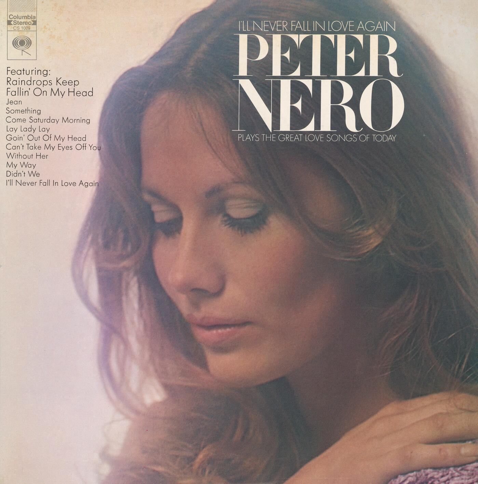
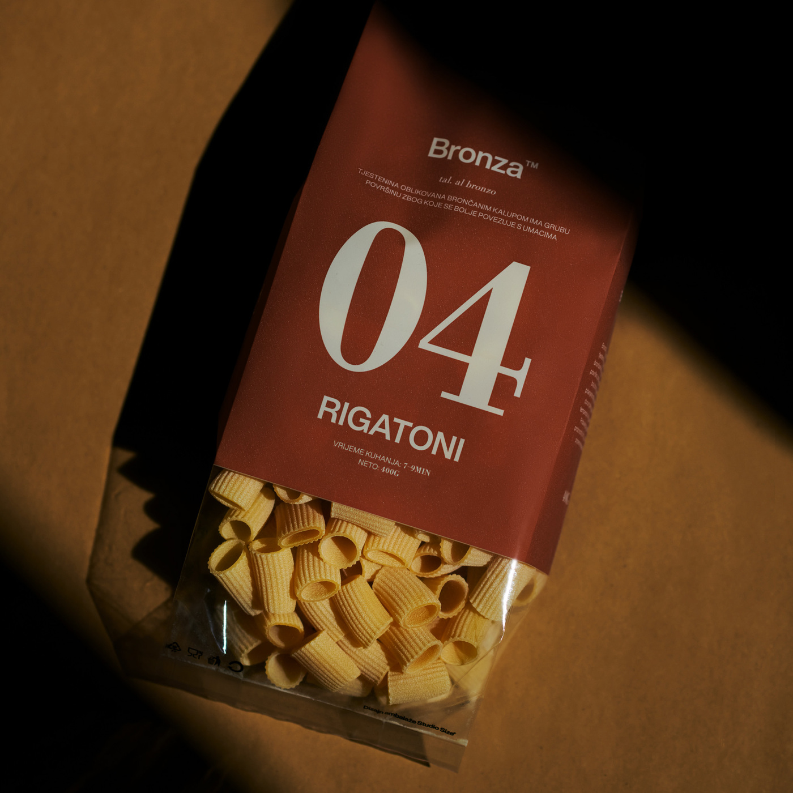
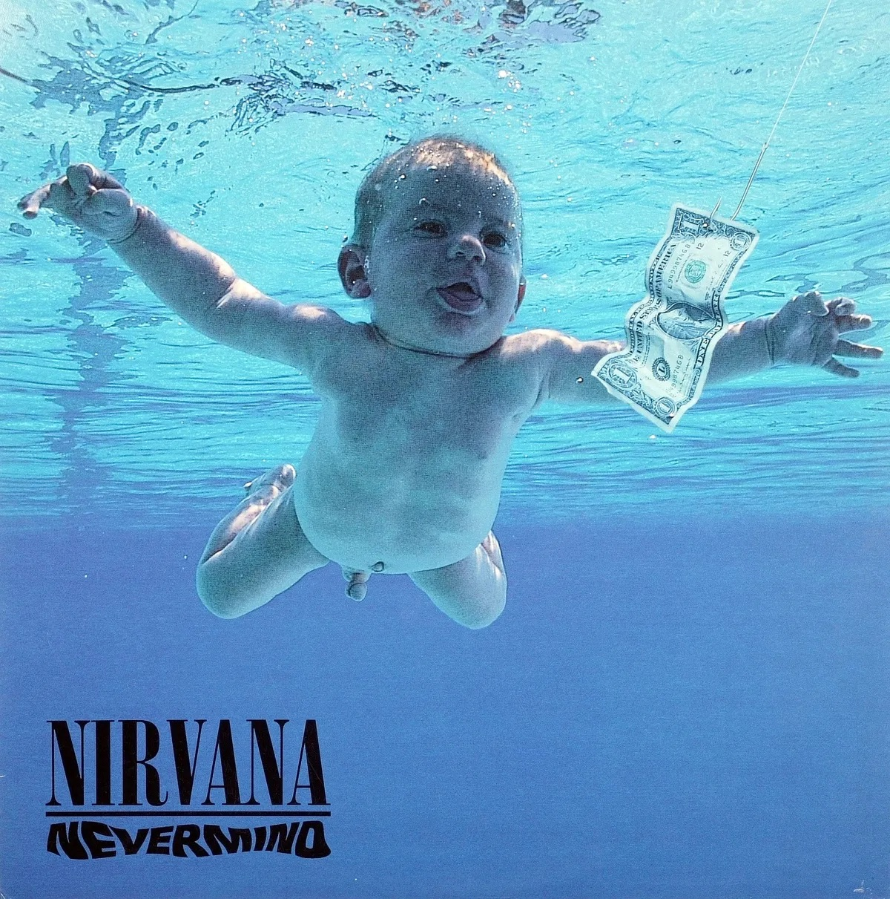
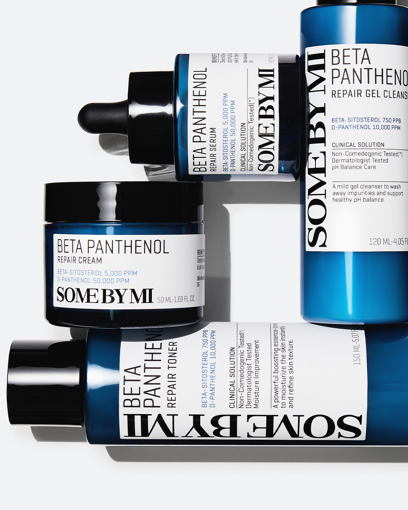

Didot vs. Bodoni
History of each typeface
Didot
Linotype Didot is a digital interpretation of the classic Didot typeface, released by Linotype in 1991 in Bad Homburg. It is based on the original Didot designs created by Firmin Didot and the Didot family in 1784 in Paris. Linotype Didot was developed to faithfully reproduce the elegance and precision of the original while improving readability and consistency for digital publishing. Its high contrast, delicate serifs, and refined letterforms make it a popular choice for fashion magazines, luxury branding, advertising, and high-end editorial design.
Bodoni
Bodoni URW is a digital revival of the classic Bodoni typeface, released by URW Type Foundry in 1994 in Hamburg. It is based on the original typeface designed by Giambattista Bodoni in 1798 in Parma. Bodoni URW was created to preserve the elegance and dramatic contrast of Bodoni's original design while optimizing it for digital typography and modern printing. It retains the distinctive thick and thin strokes, thin unbracketed serifs, and formal appearance that make it popular for editorial design, branding, and display typography.
Comparison

Similarities


Differences

Examples and visual references
Didot


Bodoni


